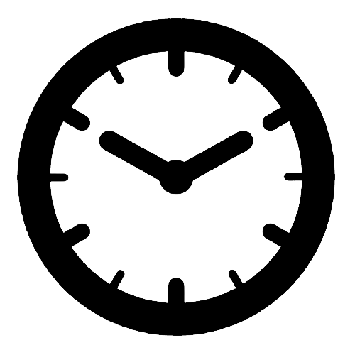
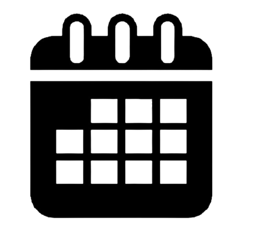
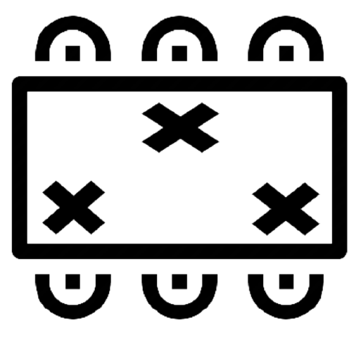
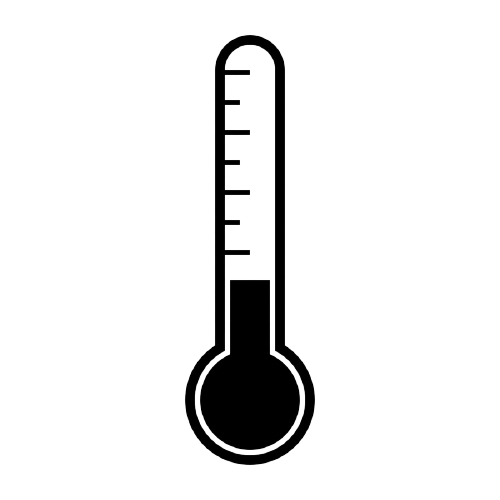
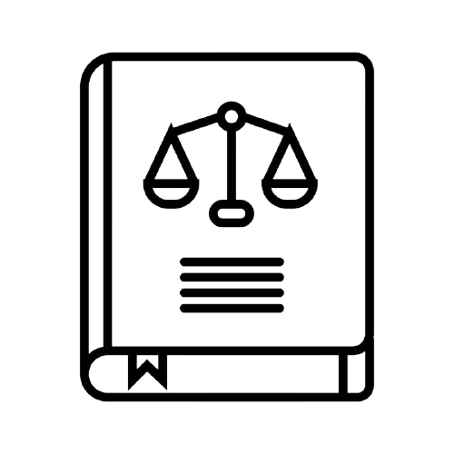

Retornando aos trabalhos presenciais nos escritórios
Com a Pandemia da Covid-19, muita coisa mudou. O trabalho remoto não foi uma opção, mas sim necessário e assim se foram quase 2 anos de home office.
Porém, hoje com a vacinação em andamento, já podemos enxergar novas possibilidades, e aqui na FCamara não é diferente, com muito cuidado e segurança estamos planejando a reabertura da nossa empresa.
Estamos muito felizes com essa novidade, mas sabemos que não será como antes.
#SangueLaranja você decide se quer trabalhar em casa ou nos escritórios.

Caso você queira trabalhar em um de nossos escritórios com outros colegas fique atento à essas informações:
-

Os escritórios ficarão abertos das 8h às 18h.
-

Para que todos possam trabalhar em segurança, temos um sistema para agendar a sua ida.
Lá você poderá escolher em qual escritório trabalhar, o dia e além disso a sua estação de trabalho, para tornar isso possível todas as estações foram demarcadas.
-

Além de demarcar as estações de trabalho as mesas possuem adesivos sinalizando onde sentar, respeitando assim o distanciamento entre os #SangueLaranjas.
-

Ao chegar no escritório a sua temperatura será aferida.
-
Para que todos possam trabalhar com segurança todos deverão usar máscaras dentro das acomodações dos escritórios.
-
Caso não esteja se sentindo bem pedimos que fique em casa.
-

Conforme a legislação, nossos escritórios estão funcionando com 40% da capacidade.